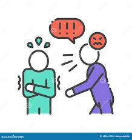

Os tipos de bullying
Na lista abaixo são descritas as formas mais frequentes de bullying. Vale mencionar
que uma pessoa pode ser vítima, simultaneamente, de vários tipos de intimidação.
Por exemplo: Ernesto é vítima de bullying físico e psicológico.
● Bullying físico: envolve agressões físicas reiteradas, como golpes, chutes,
tapas, empurrões, puxões de cabelo ou qualquer agressão corporal.

● Bullying psicológico: afeta especialmente o psicológico da pessoa. Geralmente
acontece a partir de acusações e palavras ofensivas que baixam a autoestima
e provocam sentimentos de tristeza na vítima.

● Bullying verbal: comumente aparece com ações tais como falar mal de outra
pessoa, fazer piadas dela em público, colocar apelidos indignos, etc. Exemplo:
fazer piadas reiteradas a uma pessoa com sobrepeso.

● Bullying sexual: envolve assédio de natureza sexual, como aproximações
indevidas, passar a mão, fazer cantadas, gestos ou insinuações de cunho
sexual.
● Bullying por orientação ou identidade sexual: este tipo de bullying também se
apresenta quando uma pessoa é discriminada, ou violentada, pela sua
condição sexual ou de gênero. Exemplo: uma pessoa homossexual, transexual,
ou pertencente à comunidade LGBTQIA+, é vítima de ofensas ou assédio.

● Bullying social ou moral: consiste em isolar a pessoa; isto é, violentá-la com o
objetivo de que esta seja rechaçada pela comunidade. Esta exclusão acontece,
comumente, pelas condições socioeconômicas, étnicas, raciais, de gênero,
limitações físicas ou condições mentais da vítima. Exemplo: uma pessoa com
síndrome de Asperger, ou com alguma deficiência física, é excluída das
brincadeiras e jogos.

● Bullying material: consiste em romper ou furtar continuamente os objetos
materiais do outro. Exemplo: romper o estojo, os brinquedos, a mochila, a
roupa, com a intenção de prejudicar intencionalmente o outro.
● Cyberbullying: acontece na Internet, geralmente pelas redes sociais. A pessoa
que sofre este tipo de assédio é xingada, ameaçada ou submetida a difamação
pública. O Facebook, Instagram e, por vezes, o WhatsApp, costumam ser o
cenário mais recorrente deste bullying.